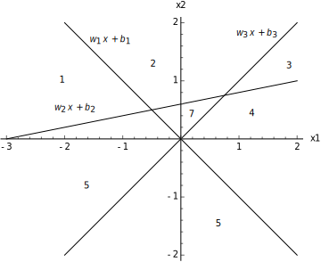
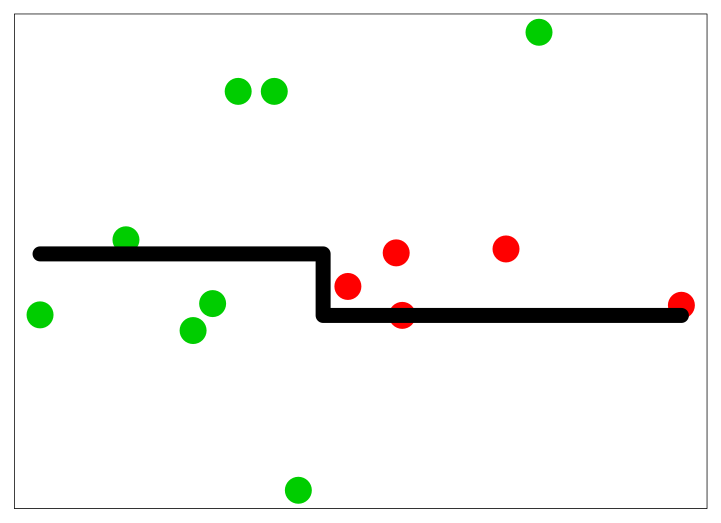
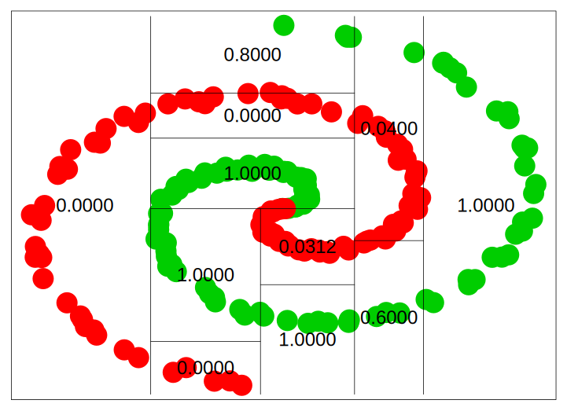
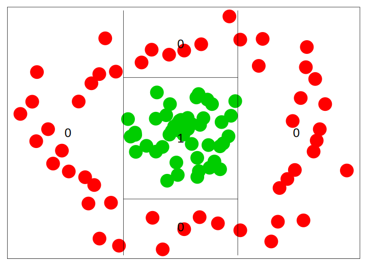
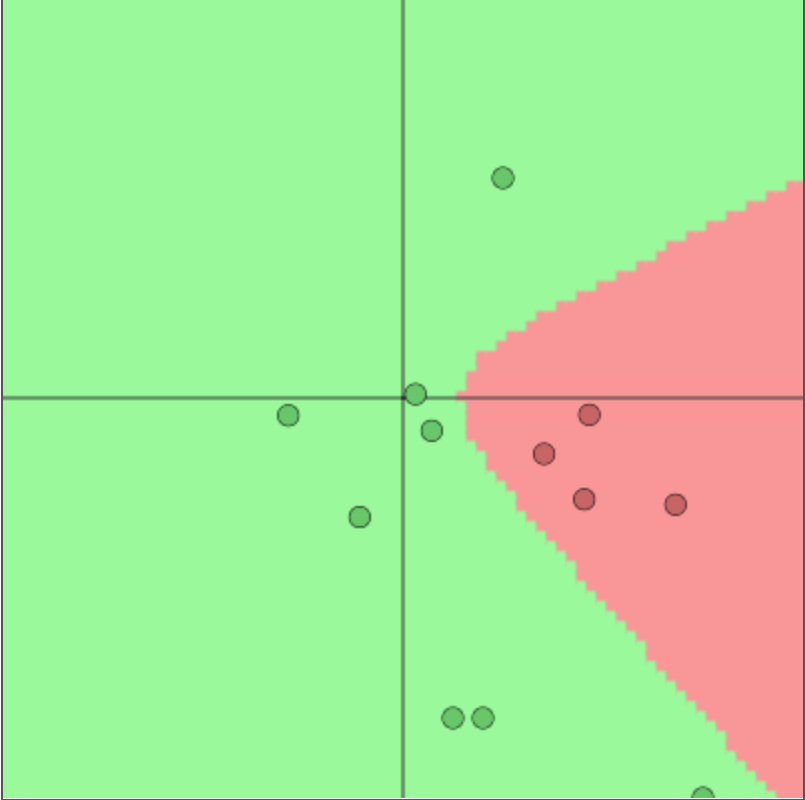
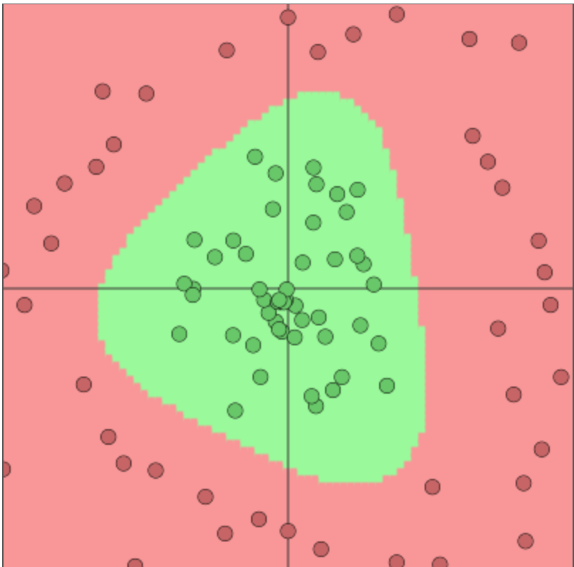
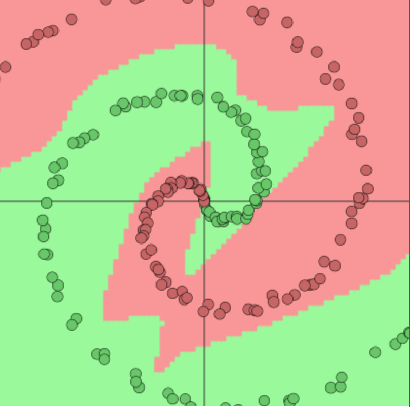
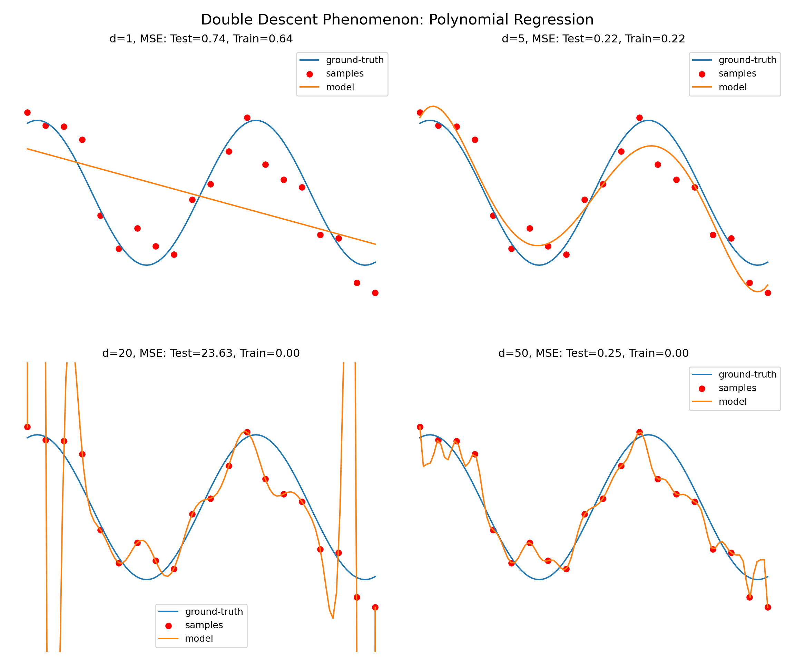
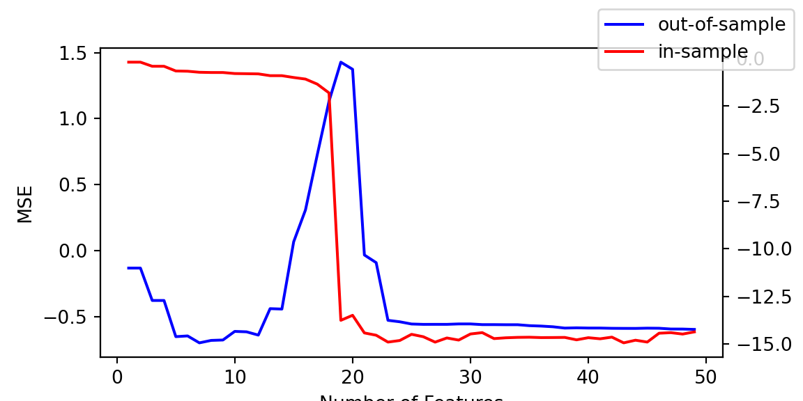

This chapter explores the theoretical foundations of deep learning through the lens of multivariate function approximation, beginning with ridge functions as fundamental building blocks. Ridge functions, which take the form \(f(x) = g(w^Tx)\), represent one of the simplest forms of nonlinear multivariate functions by combining a single linear projection with a univariate nonlinear transformation. Their key geometric property—remaining constant along directions orthogonal to the projection vector \(w\)—makes them particularly useful for high-dimensional approximation. The chapter then introduces projection pursuit regression, which approximates complex input-output relationships using linear combinations of ridge functions, demonstrating how these mathematical constructs provide the groundwork for modern deep learning approaches.
The chapter culminates with the Kolmogorov Superposition Theorem (KST), a profound result that shows any real-valued continuous function can be represented as a sum of compositions of single-variable functions. This theorem provides a theoretical framework for understanding how complex multivariate functions can be decomposed into simpler, more manageable components—a principle that underlies the architecture of modern neural networks. The discussion raises important questions about the trade-off between computational power and mathematical efficiency in machine learning, challenging whether superior performance can be achieved through mathematically elegant representations rather than brute-force computational approaches.
20.1 Ridge and Projection Pursuit Regression
To understand the significance of this trade-off, we consider ridge functions, which represent a fundamental building block in multivariate analysis. Since our ultimate goal is to model arbitrary multivariate functions \(f\), we need a way to reduce dimensionality while preserving the ability to capture nonlinear relationships. Ridge functions accomplish this by representing one of the simplest forms of nonlinear multivariate functions, requiring only a single linear projection and a univariate nonlinear transformation. Formally, a ridge function \(f: \mathbb{R}^n \rightarrow \mathbb{R}\) takes the form \(f(x) = g(w^Tx)\), where \(g\) is a univariate function and \(x,w \in \mathbb{R}^n\). The non-zero vector \(w\) is called the direction. The term “ridge” reflects a key geometric property: the function remains constant along any direction orthogonal to \(w\). Specifically, for any direction \(u\) such that \(w^Tu = 0\), we have
\[
f(x+u) = g(w^T(x+u)) = g(w^Tx) = f(x)
\]
This structural simplicity makes ridge functions particularly useful as building blocks for high-dimensional approximation.
Ridge functions play a central role in high-dimensional statistical analysis. For example, projection pursuit regression approximates input-output relations using a linear combination of ridge functions Friedman and Stuetzle (1981),huber1985proje:
\[
\phi(x) = \sum_{i=1}^{p}g_i(w_i^Tx),
\]
where both the directions \(w_i\) and functions \(g_i\) are variables and \(w_i^Tx\) are one-dimensional projections of the input vector. The vector \(w_i^Tx\) is a projection of the input vector \(x\) onto a one-dimensional space and \(g_i(w_i^Tx)\) can be though as a feature calculated from data. Diaconis and Shahshahani (1984) use nonlinear functions of linear combinations, laying important groundwork for deep learning.
The landscape of modern machine learning has been shaped by the exponential growth in computational power, particularly through advances in GPU technology and frameworks like PyTorch. While Moore’s Law has continued to drive hardware improvements and CUDA algorithms have revolutionized our ability to process vast amounts of internet data, we pose the following question: can we achieve superior performance through mathematically efficient representations of multivariate functions rather than raw computational power?
A fundamental challenge in machine learning lies in effectively handling high-dimensional input-output relationships. This challenge manifests itself in two distinct but related tasks. First, one task is to construct a “look-up” table (dictionary) for fast search and retrieval of input-output examples. This is an encoding and can be thought of as a data compression problem. Second, and perhaps more importantly, we must develop prediction rules that can generalize beyond these examples to handle arbitrary inputs.
More formally, we seek to find a good predictor function \(f(x)\) that maps an input \(x\) to its output prediction \(y\). In practice, the input \(x\) is typically a high-dimensional vector:
\[
y = f ( x ) \; \; {\rm where} \; \; x = ( x_1 , \ldots , x_d )
\]
Given a training dataset \((y_i,x_i)_{i=1}^N\) of example input-output pairs, our goal is to train a model, i.e. to find the function \(f\). The key question is: how do we represent a multivariate function so as to obtain a desirable \(f\)?
20.2 Space Partitioning
The partitioning of the input space by a deep learner is similar to the one performed by decision trees and partition-based models such as CART, MARS, RandomForests, BART. However, trees are more local in the regions that they use to construct their estimators within a region. Each neuron in deep learning model corresponds to a manifold that divides the input space. In case of ReLU activation function \(f(x) = \max(0,x)\) the manifold is simply a hyperplane and neuron gets activated when the new observation is on the “right” side of this hyperplane, the activation amount is equal to how far from the boundary the given point is. For example in two dimensions, three neurons with ReLU activation functions will divide the space into seven regions, as shown on Figure Figure 20.1.

Figure 20.1
The key difference then between tree-based architecture and neural network based models is the way hyper-planes are combined. Figure Figure 20.2 shows the comparison of space decomposition by hyperplanes as performed by a tree-based and neural network architectures. We compare a neural network with two layers (bottom row) with tree model trained with CART algorithm (top row). The network architecture used is:
The weight matrices for simple data \(W^1, W^2 \in \mathbb{R}^{2 \times 2}\), for circle data \(W^1 \in \mathbb{R}^{2 \times 2}\) and \(W^2 \in \mathbb{R}^{3 \times 2}\), for spiral data we have \(W^1 \in \mathbb{R}^{2 \times 2}\) and \(W^2 \in \mathbb{R}^{4 \times 2}\). In our notations, we assume that the activation function is applied pointwise at each layer. An advantage of deep architectures is that the number of hyper-planes grow exponentially with the number of layers. The key property of an activation function (link) is \(f(0) = 0\) and it has zero value in certain regions. For example, hinge or rectified learner \(\max(x,0)\), box car (differences in Heaviside) functions are very common. As compared to a logistic regression, rather than using \(\mathrm{softmax}(1/(1+e^{-x}))\) in deep learning \(\tanh\) is typically used for training.






Figure 20.2: Space partition by tree architectures (top row) and deep learning architectures (bottom row) for three different data sets.
Formally, a Bayesian probabilistic approach (if computationally feasible) knows how to optimally weight predictors via a model averaging approach: \[
\hat{Y}(X) = \sum_{r=1}^R w_k \hat{Y}_k(X)
\]
where \(\hat{Y}_k(x) = E(Y \mid X_k)\). Such rules can achieve great out-of-sample performance. Amit, Blanchard, and Wilder (2000) discuss the striking success of multiple randomized classifiers. Using a simple set of binary local features, one classification tree can achieve 5% error on the NIST data base with 100,000 training data points. On the other hand 100 trees, trained under one hour, when aggregated yield an error rate under 7%. We believe that this stems from the fact that a sample from a very rich and diverse set of classifiers produces on average weakly dependent classifiers conditional on class. A Bayesian model of weak dependence is exchangeability.
20.3 Kolmogorov Superposition Theorem (KST)
Kolmogorov demonstrated that any real-valued continuous function \(f(\mathbf{x})\) defined on \(E^n\) can be represented as a convolution of two single variable functions:
where \(g_q\) are continuous single-variable functions defined on \(\phi_q(E^n)\). Kolmogorov further showed that the \(\phi_q\) functions can be decomposed into sums of single-variable functions:
The theorem has seen several refinements over time, the inner functions could be Hölder continuous and Lipschitz continuous, though this required modifications to both the outer and inner functions.
The inner functions \(\Psi_q\) partition the input space into distinct regions, and the outer function, \(g\), must be constructed to provide the correct output values across the regions that the inner function defines. The outer function, \(g\), can be determined via a computationally intensive process of averaging. For each input configuration, the inner functions \(\Psi_q\) generate a unique encoding, and \(g\) must map this encoding to the appropriate value of \(f(x)\). This creates a dictionary-like structure that associates each region with its corresponding output value. Köppen made significant contributions by correcting Sprecher’s original proof of this construction process, with improvements to the computational algorithm later suggested by Actor (2018) and Demb and Sprecher (2021). Braun further enhanced the understanding by providing precise definitions of the shift parameters \(\delta_k\) and characterizing the topological structure induced by \(\Psi_q\).
A fundamental trade-off in KST exists between function smoothness and dimensionality. The inner functions \(\psi_{p,q}\) can be chosen from two different function spaces, each offering distinct advantages. The first option is to use functions from \(C^1([0,1])\), but this limits the network’s ability to handle higher dimensions effectively. The second option is to relax the smoothness requirement to Hölder continuous functions (\(\psi_{p,q} \in \text{Holder}_\alpha([0,1])\)), which satisfy the inequality \(|\psi(x) - \psi(y)| < |x-y|^\alpha\). These functions are less smooth, but this “roughness” enables better approximation in higher dimensions.
Kolmogorov-Arnold Networks
A significant development has been the emergence of Kolmogorov-Arnold Networks (KANs). The key innovation of KANs is their use of learnable functions rather than weights on the network edges. This replaces traditional linear weights with univariate functions, typically parametrized by splines, enhancing both representational capacity and interpretability.
There is a practical connection between KST and neural networks by showing that any KAN can be constructed as a 3-layer MLP. Consider a KST in the form of sums of functions, a two layer model:
This insight leads to a fast scalable algorithm that avoids back-propagation, applicable to any GAM model, using a projection descent method with a Newton-Kacmarz scheme.
Rather than using learnable functions as network nodes activations, Polson Sokolov directly use KST representation. This is a 2-layer network with a non-differentiable inner function. The network’s architecture can be expressed as:
Here, \(\lambda_p = \sum_{r=1}^\infty \gamma^{-(p-1)\beta(r)}\) is a \(p\)-adic expansion with \(\beta(r) = (n^r-1)/(n-1)\) and \(\gamma \geq d+2\) with \(a = (\gamma(\gamma-1))^{-1}\).
The Köppen function \(\psi\) is defined through a recursive limit:
The most striking aspect of KST is that it leads to a Generalized Additive Model (GAM) with fixed features that are independent of the target function \(f\). These features, determined by the Köppen function, provide universal topological information about the input space, effectively implementing a k-nearest neighbors structure that is inherent to the representation.
This leads to the following architecture. Any deep learner can be represented as a GAM with feature engineering (topological information) given by features \(z_k\) in the hidden layer:
The theory of kernel methods was developed by Fredholm in the context of integral equations Fredholm (1903). The idea is to represent a function as a linear combination of basis functions, which are called kernels.
Here, the unknown function \(f(x)\) is represented as a linear combination of kernels \(K(x,x')\) with unknown coefficients \(\phi(x')\). The kernels are known, and the coefficients are unknown. The coefficients are found by solving the integral equation. The first work in this area was done by Abel who considered equations of the form above.
Nowadays, we call those equations Volterra integral equations of the first kind. Integral equations typically arise in inverse problems. Their significance extends beyond their historical origins, as kernel methods have become instrumental in addressing one of the fundamental challenges in modern mathematics: the curse of dimensionality.
Bartlett Nadaraya (1964) and Watson (1964) proposed the use of kernels to estimate the regression function. The idea is to estimate the regression function \(f(x)\) at point \(x\) by averaging the values of the response variable \(y_i\) at points \(x_i\) that are close to \(x\). The kernel is used to define the weights.
Both Nadaraya and Watson considered the symmetric kernel \(K(x,x') = K(\|x'-x\|_2)\), where \(||\cdot||_2\) is the Euclidean norm. The most popular kernel of that sort is the Gaussian kernel:
Alternatively, the 2-norm can be replaced by the inner-product: \(K(x,x') = \exp\left( x^Tx'/2\sigma^2\right)\).
Kernel methods are supported by numerous generalization bounds which often take the form of inequalities that describe the performance limits of kernel-based estimators. A particularly important example is the Bayes risk for \(k\)-nearest neighbors (\(k\)-NN), which can be expressed in a kernel framework as:
\(k\)-NN classifiers have been proven to converge to an error rate that is bounded in relation to the Bayes error rate, with the exact relationship depending on the number of classes. For binary classification, the asymptotic error rate of \(k\)-NN is at most \(2R^*(1-R^*)\), where \(R^*\) is the Bayes error rate. This theoretical bound suggests potential for improvement in practice. Cover and Hart proved that interpolated k-NN schemes are consistent estimators, meaning that their performance improves with increasing sample size.
20.5 Transformers as Kernel Smoothing
Bahdanau, Cho, and Bengio (2014) proposed using kernel smoothing for sequence-to-sequence learning. This approach estimates the probability of the next word in the sequence using a so-called context vector, which is a weighted average of the vectors from the input sequence \(h_j\):
\[
c_i = \sum_{j=1}^n \alpha_{ij} h_j,
\]
where \(\alpha_{ij}\) are the weights. The weights are defined by the kernel function:
Instead of using a traditional similarity measure like the 2-norm or inner product, the authors used a neural network to define the energy function \(e_{ij} = a(s_{i-1},h_j)\). This neural network measures the similarity between the last generated element of the output sequence \(s_{i-1}\) and \(j\)-th element of the input sequence \(h_j\). The resulting context vector is then used to predict the next word in the sequence.
Transformer
Transformers have since become a main building block for various natural language processing (NLP) tasks and has been extended to other domains as well due to their effectiveness. The transformer architecture is primarily designed to handle sequential data, making it well-suited for tasks such as machine translation, language modeling, text generation, and more. It achieves state-of-the-art performance by leveraging a novel attention mechanism.
The idea to use kernel smoothing for sequence to sequence was called “attention”, or cross-attention, by Bahdanau, Cho, and Bengio (2014). When used for self-supervised learning, it is called self-attention. When a sequence is mapped to a matrix \(M\), it is called multi-head attention. The concept of self-attention and attention for natural language processing was further developed by Vaswani et al. (2023) who developed a smoothing method that they called the transformer.
The transformer architecture revolves around a series of mathematical concepts and operations:
Embeddings: The input text is converted into vectors using embeddings. Each word (or token) is represented by a unique vector in a high-dimensional space.
Positional Encoding: Since transformers do not have a sense of sequence order (like RNNs do), positional encodings are added to the embeddings to provide information about the position of each word in the sequence.
Multi-Head Attention: The core of the transformer model. It enables the model to focus on different parts of the input sequence simultaneously. The attention mechanism is defined as: \[ \text{Attention}(Q, K, V) = \text{softmax}\left(\frac{QK^T}{\sqrt{d_k}}\right)V \] where \(Q\), \(K\), and \(V\) are query, key, and value matrices respectively.
Query (Q), Key (K), and Value (V) Vectors: These are derived from the input embeddings. They represent different aspects of the input.
Scaled Dot-Product Attention: The attention mechanism calculates the dot product of the Query with all Keys, scales these values, and then applies a softmax function to determine the weights of the Values.
Multiple ‘Heads’: The model does this in parallel multiple times (multi-head), allowing it to capture different features from different representation subspaces.
Layer Normalization and Residual Connections: After each sub-layer in the encoder and decoder (like multi-head attention or the feed-forward layers), the transformer applies layer normalization and adds the output of the sub-layer to its input (residual connection). This helps in stabilizing the training of deep networks.
Feed-Forward Neural Networks: Each layer in the transformer contains a fully connected feed-forward network applied to each position separately and identically. It is defined as: \[ \text{FFN}(x) = \max(0, xW_1 + b_1)W_2 + b_2 \] where \(W_1\), \(W_2\), \(b_1\), and \(b_2\) are learnable parameters.
Output Linear Layer and Softmax: The decoder’s final output passes through a linear layer followed by a softmax layer. This layer converts the decoder output into predicted next-token probabilities.
Training and Loss Function: Transformers are often trained using a variant of Cross-Entropy Loss to compare the predicted output with the actual output.
Masking: In the decoder, to prevent future tokens from being used in the prediction, a technique called ‘masking’ is applied.
Backpropagation and Optimization: The model’s parameters are adjusted through backpropagation and optimization algorithms like Adam.
Later, Lin et al. (2017) proposed using similar idea for self-supervised learning, where a sequence of words (sentence) is mapped to a single matrix:
\[
M = AH,
\]
where \(H\) is the matrix representing an input sequence \(H = (h_1,\ldots,h_n)\) and \(A\) is the matrix of weights:
\[
A = \mathrm{softmax}\left(W_2\tanh\left(W_1H^T\right)\right).
\]
This allows to represent a sequence of words of any length \(n\) using a “fixed size” \(r\times u\) matrix \(M\), where \(u\) is the dimension of a vector that represents an element of a sequence (word embedding) and \(r\) is the hyper-parameter that defines the size of the matrix \(M\).
The main advantage of using smoothing techniques (transformers) is that they are parallelizable. Current language models such as BERT, GPT, and T5 rely on this approach. Further, they also has been applied to computer vision and other domains. Its ability to capture long-range dependencies and its scalability have made it a powerful tool for a wide range of applications. See Tsai et al. (2019) et al for further details.
20.6 Application
Simulated Data
We also apply the K-GAM architecture to a simulated dataset to evaluate its performance on data with known structure and relationships. The dataset contains 100 observations generated from the following function:
The goal is to predict the function \(y(x)\) based on the input \(x\). The dataset is often used as a benchmark dataset for regression algorithms due to its diverse mix of relationships (linear, quadratic, nonlinear, Gaussian random noise) between the input features and the target function.
We use the Köppen function to transform the five-dimensional input into a set of 11 features (\(2d+1\)). We then learn the outer function \(g\) using a ReLU network. To thoroughly investigate the model’s capabilities, we implement two distinct approaches to learning the outer function. The first approach uses different \(g\) functions for each feature, following the original KST formulation. This allows each function to specialize in capturing specific patterns, but might be more difficult to train and has more parameters. The second approach uses a single \(g\) function for all features, as proposed by Lorentz (1976), providing a more unified and parameter-efficient representation.
For the first model with multiple \(g_i\) functions, the dimensions of each \(g_i\) are as follows: \(W^0_i \in \mathbb{R}^{16\times 1}\) and for \(j=1,\ldots,18\), \(W^j_i \in \mathbb{R}^{16\times 16}\).
The next architecture, which used only one function \(g\) for all features, maintains a similar structure to the multiple \(g\) functions approach. The only difference is in the dimensionality of the inner layers: we increased the width from 16 to 200. This increased capacity allows the single function to learn more complex patterns and compensate for the constraint of using just one function instead of multiple specialized ones.
Training Rates
Consider the non-parametric condition regression, \(y_i= f (x_i) + \epsilon_i\) where \(x_i = ( x_{1i} , \ldots , x_{di} )\). We wish to estimate \(f( x_1 , \ldots , x_d )\) where \(x = ( x_1 , \ldots , x_d ) \in [0,1]^d\). From a classical risk perspective, define
\[
R ( f , \hat{f}_N ) = E_{X,Y} \left ( \lVert f - \hat{f}_N \rVert^2 \right )
\]
where \(\lVert . \rVert\) denotes \(L^2 ( P_X)\)-norm.
Under standard assumptions, we have an optimal minimax rate \(\inf_{\hat{f}} \sup_f R( f , \hat{f}_N )\) of \(O_p \left ( N^{- 2 \beta /( 2 \beta + d )} \right )\) for \(\beta\)-Hölder smooth functions \(f\). This rate still depends on the dimension \(d\), which can be problematic in high-dimensional settings. By restricting the class of functions, better rates can be obtained, including ones that do not depend on \(d\). In this sense, we avoid the curse of dimensionality. Common approaches include considering the class of linear superpositions (a.k.a. ridge functions) and projection pursuit models.
Another asymptotic result comes from a posterior concentration property. Here, \(\hat{f}_N\) is constructed as a regularized MAP (maximum a posteriori) estimator, which solves the optimization problem
where \(\phi(\hat{f})\) is a regularization term. Under appropriate conditions, the ensuing posterior distribution \(\Pi(f | x, y)\) can be shown to concentrate around the true function at the minimax rate (up to a \(\log N\) factor).
A key result in the deep learning literature provides convergence rates for deep neural networks. Given a training dataset of input-output pairs \(( x_i , y_i)_{i=1}^N\) from the model \(y = f(x) + \epsilon\) where \(f\) is a deep learner (i.e. superposition of functions
\[
f = g_L \circ \ldots g_1 \circ g_0
\]
where each \(g_i\) is a \(\beta_i\)-smooth Hölder function with \(d_i\) variables, that is \(| g_i (x) -g_i (y) < | x-y |^\beta\).
This result can be applied to various function classes, including generalized additive models of the form
\[
f_0 ( x ) = h \left ( \sum_{p=1}^d f_{0,p} (x_p) \right )
\]
where \(g_0(z) = h(z)\), \(g_1 ( x_1 , \ldots , x_d ) = ( f_{01}(x_1) , \ldots , f_{0d} (x_d) )\) and \(g_2 ( y_1 , \ldots , y_d ) = \sum_{i=1}^d y_i\). In this case, \(d_1 = d_2 = 1\), and assuming \(h\) is Lipschitz, we get an optimal rate of \(O(N^{-1/3})\), which is independent of \(d\).
Schmidt-Hieber (2021) show that deep ReLU networks also have optimal rate of \(O( N^{-1/3} )\) for certain function classes. For \(3\)-times differentiable (e.g. cubic B-splines ), Coppejans (2004) finds a rate of \(O( N^{-3/7} ) = O( N^{-3/(2 \times 3 + 1) } )\). Igelnik and Parikh (2003) finds a rate \(O( N^{-1} )\) for Kolmogorov Spline Networks.
Finally, it’s worth noting the relationship between expected risk and empirical risk. The expected risk, \(R\), is typically bounded by the empirical risk plus a term of order \(1/\sqrt{N}\):
where \(f^\star\) is the minimizer of the expected risk. However, in the case of interpolation, where the model perfectly fits the training data, the empirical risk term becomes zero, leaving only the \(O(1/\sqrt{N})\) term.
20.7 General latent feature model
Given a training data-set of input-output pairs \((\mathbf{X}_i , \mathbf{Y}_i )_{i=1}^N\), the goal is to find a prediction rule for a new output \(\mathbf{Y}_*\) given a new input \(\mathbf{X}_*\). Let \(\mathbf{Z}\) denote latent hidden features that are to be hand-coded or learned from the data and our nonlinear latent feature predictive model takes the form:
where \(\phi(\cdot)\) is a data transformation that allows for relations between latent features \(\mathbf{Z} = \phi(\mathbf{X})\) and \(\mathbf{Y}\) to be modeled by a well-understood probabilistic model \(p\). Typically, \(\phi(\cdot)\) will perform dimension reduction or dimension expansion and can be learned from data. It is worthwhile to emphasize that the top level of such a model is necessarily stochastic.
As pointed out before, the basic problem of machine learning is to learn a predictive rule from observed pairs \((\mathbf{X},\mathbf{Y})\), \(\mathbf{Y}_{\star} = F(\mathbf{X}_{\star} )\) where \(F(\mathbf{X}_{\star} ) = \mathbb{E}\{\mathbf{Y} \mid \phi(\mathbf{X}_{\star})\}\). Even though it is well known that deep learners are universal approximators, it is still an open area of research to understand why deep learners generalize well on out-of-sample predictions. One of the important factors for the success of deep learning approach is the ability to perform a non-linear dimensionality reduction.
The purely statistical approach requires full specification of the conditional distribution \(p(\mathbf{Y} \mid \mathbf{X})\) and then uses conditional probability via Bayes’ rule to perform inference. However, a fully Bayesian approach is often computationally prohibitive in high-dimensional feature space, without resorting to approximations or foregoing UQ. The alternative approach is to perform a data transformation or reduction on the data input \(\mathbf{X}\), such as performing a PCA or PCR first and then use a statistical approach on the transformed feature space. Deep learning methods can fit into this spectrum by viewing it as a non-linear PCA or PLS N. Polson, Sokolov, and Xu (2021),Malthouse, Mah, and Tamhane (1997). However, it possesses some unique properties not available for shallow models.
20.8 Deep Learning Expansions
Similar to a tree model that finds features (aka tree leaves) via recursive space partitioning, the deep learning model finds the regions by using hyperplanes at the first layer and combinations of hyperplanes in the further layers. The prediction rule is embedded into a parameterized deep learner, a composite of univariate semi-affine functions, denoted by \(F_{\mathbf{W}}\) where \(\mathbf{W} = [\mathbf{W}^{(1)}, \ldots , \mathbf{W}^{(L)}]\) represents the weights of each layer of the network. A deep learner takes the form of a composition of link functions:
where \(\sigma_L(\cdot)\) is a univariate link or activation function. Specifically, let $^{(l)} $ denote the \(l^{th}\) layer, and so \(\mathbf{X} = \mathbf{Z}^{(0)}\). The final output is the response \(\mathbf{Y}\), which can be numeric or categorical. A deep prediction rule is then \(\hat{\mathbf{Y}}(\mathbf{X}) = \mathbf{W}^{(L)} \mathbf{Z}^{(L)} + \mathbf{b}^{(L)}\) where
It is often beneficial to replace the original input \(\mathbf{X}\) with the features \(\mathbf{Z} = \phi(\mathbf{X})\) of lower dimensionality when developing a predictive model for \(\mathbf{Y}\). For example, in the context of regressions, a lower variance prediction rule can be obtained in lower dimensional space. DL simply uses a composition or superposition of semi-affine filters (aka link functions), leading to a new framework for high-dimensional modeling in Section @ref(sec:merging).
Deep learning can then be viewed as a feature engineering solution and one of finding nonlinear factors via supervised dimension reduction. A composition of hand-coded characteristics i.e. dimension expanding, with supervised learning of data filters i.e. dimension reduction. Advances in computation allow for massive data and gradients of high-dimensional nonlinear filters. Neural networks can be viewed from two perspectives: either as a flexible link function, as in a generalized linear model, or as a method to achieve dimensionality reduction, similar to sliced inverse regression or sufficient dimensionality reduction.
One advantage of depth is that the hierarchical mixture allows the width of a given layer to be manageable. With a single layer (e.g., kernel PCA/SVM) we need exponentially many more basis functions in that layer. Consider kernel PCA with say radial basis functions (RBF) kernels: technically there are infinitely many basis functions, but it cannot handle that many input dimensions. Presumably, a deep neural network allows a richer class of covariances that allows anisotropy and non-stationarity. In the end, this is reflected in the function realizations from a DNN. To see this, consider the deep GP models, which are infinite width limits of DNNs. There is a recursive formula connecting the covariance of layer \(k\) to that of layer \(k+1\), but no closed form. The covariance function of the final hidden layer is probably very complicated and capable of expressing an arbitrary number of features, even if the covariances in each layer may be simple. The increase in dimensionality happens through the hierarchical mixture, rather than trying to do it all in one layer. From a statistical viewpoint, this is similar to the linear shallow wide projections introduced by Wold (1975/ed) and the sufficient dimension reduction framework of Cook (2007).
In the context of unsupervised learning, information in the marginal distribution, \(p(\mathbf{X})\), of the input space is used as opposed to the conditional distribution, \(p(\mathbf{X}\mid \mathbf{Y})\). Methods such as PCA (PCA), PCR (PCR), Reduced Rank Regression (RRR), Projection-Pursuit Regression (PPR) all fall into this category and PLS (PLS), Sliced Inverse Regression (SIR) are examples of supervised learning of features, see N. G. Polson, Sokolov, et al. (2017) for further discussion.
We first uncover the structure in the predictors relevant for modeling the output \(\mathbf{Y}\). The learned factors are denoted by \(F(\phi(\mathbf{X}))\) and are constructed as a sequence of input filters. The predictive model is given by a probabilistic model of the form \(p(\mathbf{Y} \mid \mathbf{X}) \equiv p(\mathbf{Y} \mid F(\phi(\mathbf{X})))\). Here \(\phi: \mathbb{R}^p \mapsto \mathbb{R}^c,~c \gg p\) initially expands the dimension of the input space by including terms such as interactions, dummy variables (aka one-hot encodings) and other nonlinear features of the input space deemed relevant. Then, \(F\) reduces dimension of deep learning by projecting back with a univariate activation function into an affine space (aka regression). This framework also sheds light on how to build deep (skinny) architectures. Given \(n\) data points, we split into \(L = 2^p\) regions so that there is a fixed sample size within each bin. This process transforms \(\mathbf{X}\) into many interpretable characteristics. This can lead to a huge number of predictors that can be easily dealt within the DL architecture, making the advantage of depth clear.
20.9 Dimensionality Expansion
First, we review ‘dimensionality expansions’: data transformation that transforms an input vector \(\mathbf{X}\) into a higher dimensional vector \(\phi(\mathbf{X})\). One approach is to use hand-coded predictors. This expanded set can include terms such as interactions, dummy variables or nonlinear functional of the original predictors. The goal is to model the joint distribution of outputs and inputs, namely $p( , ()) $, where we allow our stochastic predictors.
Kernel Expansion: The kernel expansion idea is to enlarge the feature space via basis expansion. The basis is expanded using nonlinear transformations of the original inputs: \[\phi(\mathbf{X}) = (\phi_1(\mathbf{X}),\phi_2(\mathbf{X}),\ldots,\phi_M(\mathbf{X}))\] so that linear regression \(\hat{\mathbf{Y}} = \phi(\mathbf{X})^T\beta + \beta_0\) or generalized linear model can be used to model the input-output relations. Here, the ‘kernel trick’ increases dimensionality, and allows hyperplane separation while avoiding an exponential increase in the computational complexity. The transformation \(\phi(\mathbf{x})\) is specified via a kernel function \(K(\cdot, \cdot)\) which calculates the dot product of feature mappings: \(K(\mathbf{x},\mathbf{x}') = \phi(\mathbf{x})^T\phi(\mathbf{x}').\) By choosing a feature map \(\phi\), we implicitly choose a kernel function and, conversely, every positive semi-definite kernel matrix corresponds to a feature mapping \(\phi\). For example, when \(\mathbf{X}\in \mathbb{R}^2\), choosing \(K(\mathbf{X},\mathbf{X}') = (1+\mathbf{X}^T\mathbf{X}')^2\) is equivalent to expanding the basis to \(\phi(\mathbf{X}) = (1,\sqrt{2}\mathbf{X}_1, \sqrt{2}\mathbf{X}_1, \mathbf{X}_1^2,\mathbf{X}_2^2,\sqrt{2}\mathbf{X}_1 \mathbf{X}_2)\).
Tree Expansion: Similar to kernels, we can think of trees as a technique for expanding a feature space. Each region in the input space defined by a terminating node of a tree corresponds to a new feature. Then, the predictive rule becomes very simple: identify in which region the new input is and use the average across observations or a majority voting rule from this region to calculate the prediction.
20.10 Dimensionality Reduction: PCA, PCR and PLS
Given input/predictors \(\mathbf{X}\) and response \(\mathbf{Y}\) and associated observed data \(\mathbf{X}\in {\mathbb{R}}^{n \times p}\) and \(\mathbf{Y} \in {\mathbb{R}}^{n\times q}\), the goal is to find data transformations \((\mathbf{Y},\mathbf{X}) \mapsto \phi(\mathbf{Y},\mathbf{X})\) so that modeling the transformed data becomes an easier task. In this paper, we consider several types of transformations and model non-linear relations.
We start by reviewing the widely used singular value decomposition (SVD) which allows finding linear transformations to identify a lower dimensional representation of either \(\mathbf{X}\), by what is known as principal component analysis (PCA), or, when using both \(\mathbf{X}\) and \(\mathbf{Y}\), known as partial least squares (PLS). First, start with the SVD decomposition of the input matrix: \(\mathbf{X} = \mathbf{U} \mathbf{D} \mathbf{W}^T\), which is full-rank if \(n > p\). Here, $ = (d_1 , , d_p ) $ are the nonzero ordered singular values (\(d_1 \ge \ldots \ge d_p)\) . The matrices \(\mathbf{U}\) and \(\mathbf{W}\) are orthogonal matrices of dimensions \(n\times p\) and \(p \times p\) with columns of \(\mathbf{U}\) as the right singular vectors and columns of \(\mathbf{W}\) as the left singular vectors, \(\mathbf{W}\) can be also thought of as the matrix consisting of eigenvectors for \(\mathbf{S} = \mathbf{X}^T \mathbf{X}\). We can then transform the original first layer to an orthogonal regression, namely defining \(\mathbf{Z} = \mathbf{U}\mathbf{D}\) whose columns are the principal components. For PCR, using \(\boldsymbol{\alpha} = \mathbf{W}^T \boldsymbol{\beta}\), we arrive at the corresponding OLS estimator \(\hat{\boldsymbol{\alpha}} = (\mathbf{Z}^T \mathbf{Z} )^{-1} \mathbf{Z}^T \mathbf{Y} = \mathbf{D}^{-1} \mathbf{U}^T \mathbf{y}\), and obtain \(\hat{y}_{pcr} = \sum_{j=1}^{K}\hat{\alpha}_j \mathbf{z}_j\), where \(\hat{\alpha}_j = \mathbf{z}_j^T \mathbf{y}/\mathbf{z}_j^T \mathbf{z}_j\), since \(\mathbf{z}_j\)’s are orthogonal, and \(K \ll p\) denotes the reduced dimension that captures a certain percentage of the total variability.
PCR, as an unsupervised approach to dimension reduction, has a long history in statistics. Specifically, we first center and standardize \((\mathbf{Y}, \mathbf{X})\), followed by a singular value decomposition of \(\mathbf{V}: = \mathrm{ave} ( \mathbf{X} \mathbf{X}^T ) = \dfrac{1}{n}\sum_{i=1}^{n}\mathbf{X}_i\mathbf{X}_i^T\) where \(\mathrm{ave}(\cdot)\) denotes the empirical average. Then, we find the eigenvalues $e_j^2 $ and eigenvectors arranged in non-increasing order, so we can write:
PLS and SVD Algorithm: Partial least squares, or PLS, is a related dimension reduction technique similar to PCR that first identifies a lower-dimensional set of features and then fits a linear model on this feature set, but PLS does this in a supervised fashion unlike PCR. In successive steps, PLS finds a reduced dimensional representation of \(\mathbf{X}\) that is relevant for the response \(\mathbf{Y}\).
PCA and multivariate output: PCA requires us to compute a reduction of multivariate output \(\mathbf{Y}\) using a singular value decomposition of \(\mathbf{Y}\) by finding eigenvectors of \(\mathbf{Z} = \mathrm{ave}(\mathbf{Y}\mathbf{Y}^T)\). Then, the output is a linear combination of the singular vectors
where the weights \(\mathbf{W}_i\) follow a Gaussian Process, \(\mathbf{W}\sim \mathrm{GP}(m,K)\). Hence, the method can be highly non-linear. This method is typically used when input variables come from a designed experiment. If the interpretability of factors is not important, and from a purely predictive point of view, PLS will lead to improved performance.
In the light of the above, one can view deep learning models as non-stochastic hierarchical data transformations. The advantage is that we can learn deterministic data transformations before applying a stochastic model. This allows us to establish a connection between a result due to Brillinger (2012) and the use of deep learning models to develop a unified framework for modeling complex high-dimensional data sets. The prediction rule can be viewed as interpolation. In high-dimensional spaces, one can mix-and-match the deterministic and stochastic data transformation rules.
20.11 Uncertainty Quantification
Our probabilistic model takes the form \(\mathbf{Y} \mid F \sim p(\mathbf{Y} \mid F )\), $F = g ( ) $, where \(\mathbf{Y}\) is possibly a multivariate output matrix and \(\mathbf{X}\) is a $n p $ matrix of input variables, and \(\mathbf{B} \mathbf{X}\) performs dimension reduction. Here \(g = g_{\mathbf{W}, \mathbf{b}}\) is a deep learner and the parameters \((\hat{\mathbf{W}} , \hat{\mathbf{b}} )\) are estimated using traditional SGD methods. The key result, due to Brillinger (2012) and Naik and Tsai (2000) is that \(\hat{\mathbf{B}}\) can be estimated consistently, up to a constant of proportionality, using PLS irrespective of the nonlinearity on \(g\). Even though Brillinger (2012) assumes that input \(\mathbf{X}\) is Gaussian in order to apply Stein’s lemma, this result generalizes to scale-mixtures of Gaussians. See also Iwata (2001) who provides analytical derivation of the uncertainty intervals for ReLU and Probit nonlinear activation functions.
The key insight here is that the lion’s share of the UQ can be done at the top layer that outputs \(\mathbf{Y}\) as the uncertainty in the dimension reduction of the \(\mathbf{X}\) space is much harder to quantify compared to quantifying the uncertainty for the prediction rule. By merging the two cultures, the probabilistic model on the first stage and deep learning on the subsequent stage, for the transformation of input data, we can obtain the best of both worlds.
Given a specification of \(g\), the constant of proportionality can also be estimated consistently with \(\sqrt{n}\)-asymptotics. Hence, to predict at a new level \(\mathbf{X}_{\star}\), we can use the predictive distribution to make a forecast and provide uncertainty bounds.
where \(\hat{\mathbf{B}}_{\mathrm{PLS}}\) is given by the left-hand side of Equation 20.1.
Notice that we can also incorporate uncertainty in the estimation of \(\mathbf{B}\) via the posterior \(p(\mathbf{B} \mid \mathbf{X},\mathbf{Y})\). Furthermore, a result of Iwata (2001) can be used to show that the posterior distribution is asymptotically normal. Hence, we can calculate the expectations analytically for activation functions, such as ReLU. As ReLU is convex, Jensen’s inequality \(g\left(\mathrm{E}(\mathbf{B} \mathbf{X})\right) \le \mathrm{E}\left(g(\mathbf{B} \mathbf{X})\right)\) shows that ignoring parameter uncertainty leads to under-prediction.
20.12 Double Descent
Double descent is a phenomenon of over-parameterized statistical models. In this section, we present a view of double descent from a Bayesian perspective. Over-parameterized models such as deep neural networks have an interesting re-descending property in their risk characteristics. This is a recent phenomenon in machine learning and has been the subject of many studies. As the complexity of the model increases, there is a U-shaped region corresponding to the traditional bias-variance trade-off, but then as the number of parameters equals the number of observations and the model becomes one of interpolation, the risk can become infinite and then, in the over-parameterized region, it re-descends—the double descent effect. We show that this has a natural Bayesian interpretation. Moreover, we show that it is not in conflict with the traditional Occam’s razor that Bayesian models possess, in that they tend to prefer simpler models when possible.
Empirically, the double descent effect was initially observed for high-dimensional neural network regression models and the good performance of these models on such tasks as large language models, image processing, and generative AI methods(Nareklishvili, Polson, and Sokolov 2023). The double descent effect extends the classical bias-variance trade-off curve that shrinkage estimators possess. This phenomenon was first observed in the context of linear regression(Belkin et al. 2019). The authors showed that the test error of the estimator can decrease as the number of parameters increases. Bach (2024) extends these results to stochastic regression models.
Interpolators—estimators that achieve zero training error—were then shown to have attractive properties due to the double descent effect(Hastie et al. 2022). Our goal is to show that Bayesian estimators can also possess a double descent phenomenon. Interpolators such as ReLU neural networks(N. G. Polson, Sokolov, et al. 2017) have increased in popularity with many applications such as traffic flow modeling(N. G. Polson, Sokolov, et al. 2017) and high-frequency trading(Dixon, Polson, and Sokolov 2019), among many others.
Occam’s razor—the favoring of simpler models over complex ones—is a natural feature of Bayesian methods that are based on the weight of evidence (a.k.a. the marginal likelihood of the data). To do this, they penalize models with higher complexity via a correction term as in the Bayesian Information Criterion (BIC). This seems inconsistent with the double descent phenomenon. We show that this is not the case, as even though Bayesian methods shift the posterior towards lower-complexity models, highly parameterized Bayesian models can also have good risk properties due to the conditional prior of parameters given the model. We illustrate this with an application to neural network models.
Double descent has been studied from a frequentist point of view in Belkin et al. (2019), Bach (2024). The phenomenon of double descent is illustrated in ?fig-double-descent. The first part of the curve represents the classical U-shaped bias-variance trade-off. The second part demonstrates the double descent phenomenon, where the test error of the estimator can decrease as the model becomes over-parameterized beyond the interpolation threshold. This phenomenon was later observed in the context of deep learning(Nakkiran et al. 2021). The authors showed that the test error of the estimator can decrease as the number of parameters increases.
Example 20.1 (Double Descent Demonstration using Polynomial Regression) To illustrate the double descent phenomenon in a concrete setting, we present a detailed example using polynomial regression with Legendre basis functions. This example demonstrates how the test error can exhibit the characteristic U-shaped curve followed by a re-descent as model complexity increases far beyond the interpolation threshold.
Our demonstration uses a one-dimensional regression problem where we attempt to learn a sinusoidal function \(f(x) = \sin(5x)\) from a small dataset of only \(n = 20\) observations sampled from the interval \([-1, 1]\). We add Gaussian noise with standard deviation \(\sigma = 0.3\) to simulate realistic measurement error. The choice of a small sample size is crucial for observing double descent, as it creates a regime where the number of model parameters can substantially exceed the number of observations.
We fit polynomial models of varying degrees \(d = 1, 2, \ldots, 50\) using Legendre polynomial basis functions. Legendre polynomials provide a numerically stable orthogonal basis that helps avoid the numerical instabilities associated with standard monomial bases in high-degree polynomial fitting. For each degree \(d\), we estimate the coefficients using the Moore-Penrose pseudoinverse, which provides the minimum-norm solution when the system is overdetermined (i.e., when \(d > n\)).
Figure 20.3 illustrates how model behavior changes dramatically across different polynomial degrees. The four panels show representative cases that capture the key phases of the double descent phenomenon:
Degree 1 (Underparameterized): The linear model is too simple to capture the oscillatory nature of the underlying sine function, resulting in high bias and poor fit to both training and test data.
Degree 5 (Classical Optimum): This represents the sweet spot of the classical bias-variance tradeoff, where the model has sufficient complexity to capture the main features of the sine function without overfitting severely.
Degree 20 (Interpolation Threshold): At this degree, the model has exactly as many parameters as training observations, enabling perfect interpolation of the training data. However, the resulting fit exhibits wild oscillations between data points, leading to poor generalization performance.
Degree 50 (Over-parameterized): Surprisingly, despite having far more parameters than observations, this highly over-parameterized model achieves better test performance than the interpolating model, demonstrating the double descent effect.
Code
n =20# number of samplessigma =0.3# stdev of noisea =-1b =1# range of x values# Use Legendre polynomial basis by defaultG = np.polynomial.legendre.legvanderdef poly(pts, beta, d):return G(pts, d).dot(beta)# Initialize dataground_truth = sinx = np.linspace(a, b, n)y = ground_truth(x) + sigma * np.random.normal(size=n)xdense = np.linspace(a, b, 100)ygt = ground_truth(xdense)# Core functionsdef solve_reg(A, y, lamb):return la.solve(A.T.dot(A) + lamb * np.identity(A.shape[1]), A.T.dot(y))def fit(d): betaHat = la.pinv(G(x, d)).dot(y) mseos = np.sqrt(np.mean((G(xdense, d).dot(betaHat) - ygt)**2)) mseis = np.sqrt(np.mean((G(x, d).dot(betaHat) - y)**2))return betaHat, mseos, mseisdef run(d, ax):"""Compute the regressor for degree d, and plot the solution.""" betaHat, mseos, mseois = fit(d) ax.plot(xdense, ygt, label='ground-truth') ax.scatter(x, y, c='r', label='samples') ax.plot(xdense, poly(xdense, betaHat, d), label='model') ax.set_ylim(-2, 2) ax.axis('off') ax.legend() ax.set_title('d=%d, MSE: Test=%.2f, Train=%.2f'% (d, mseos, mseois))
Code
# Create 2x2 subplot grid (all functions and variables are now persistent!)fig, axes = plt.subplots(2, 2, figsize=(12, 10))fig.suptitle('Double Descent Phenomenon: Polynomial Regression', fontsize=16)# Plot each degree in its respective subplotrun(1, axes[0, 0]) # Top leftrun(5, axes[0, 1]) # Top right run(20, axes[1, 0]) # Bottom leftrun(50, axes[1, 1]) # Bottom rightplt.tight_layout()plt.show()

Figure 20.3: Double Descent Phenomenon: Polynomial Regression with Different Degrees
Now, let’s plot the MSE curve. We will plot the test error (blue line) and the training error (red line) for different polynomial degrees from 1 to 50.
Code
# Generate MSE data for different polynomial degrees (using persistent functions!)nd =50mse1 = np.zeros(nd) # Test MSEmse2 = np.zeros(nd) # Train MSEfor d inrange(1, nd): betaHat, mseos, mseois = fit(d) mse1[d] = mseos mse2[d] = mseoisfig, ax1 = plt.subplots()ax1.set_xlabel('Number of Features')ax1.set_ylabel('MSE', color='black')ax1.plot(np.log10(mse1), color='blue', label='out-of-sample')ax2 = ax1.twinx()ax2.plot(np.log10(mse2), color='red', label='in-sample')# plt.plot(mse1, label='out-of-sample')# plt.plot(mse2, label='in-sample')fig.legend()

Figure 20.4: Bias-Variance Trade-off: Training and Test MSE vs Model Complexity
The key insight from Figure 20.4 is the characteristic double descent shape in the test error (blue line). The curve exhibits three distinct phases:
Classical Regime: For low degrees (\(d < 5\)), increasing model complexity reduces both bias and test error, following the traditional understanding of the bias-variance tradeoff.
Interpolation Crisis: Around the interpolation threshold (\(d \approx n = 20\)), test error peaks dramatically as the model begins to perfectly fit the training data while generalizing poorly.
Over-parameterized Regime: For very high degrees (\(d > 30\)), test error decreases again, demonstrating that extreme over-parameterization can lead to improved generalization despite the model’s ability to memorize the training data.
This behavior challenges the conventional wisdom that more parameters necessarily lead to worse generalization. The double descent phenomenon arises from the implicit regularization effects of minimum-norm solutions in over-parameterized settings. When \(d > n\), the pseudoinverse solution corresponds to the minimum \(\ell_2\)-norm coefficients among all possible interpolating solutions. This implicit bias toward simpler functions can lead to surprisingly good generalization properties.
While this example uses polynomial regression for clarity, the double descent phenomenon has been observed across a wide range of modern machine learning models, including deep neural networks, random forests, and kernel methods. The implications for practice are significant. Given that model selection is time consuming and computationally expensive, this example shows, that instead of spending time to do model selection to find the “sweet spot” model with 5-degree polynomial, we just over-parametrise and get a good model for free!
This example serves as a concrete illustration of how classical statistical intuitions about model complexity may not apply in contemporary machine learning settings, particularly when dealing with over-parameterized models that have become increasingly common in practice.
Actor, Jonas. 2018. “Computation for the Kolmogorov Superposition Theorem.” {{MS Thesis}}, Rice.
Bach, Francis. 2024. “High-Dimensional Analysis of Double Descent for Linear Regression with Random Projections.”SIAM Journal on Mathematics of Data Science 6 (1): 26–50.
Bahdanau, Dzmitry, Kyunghyun Cho, and Yoshua Bengio. 2014. “Neural Machine Translation by Jointly Learning to Align and Translate.” arXiv. https://arxiv.org/abs/1409.0473.
Belkin, Mikhail, Daniel Hsu, Siyuan Ma, and Soumik Mandal. 2019. “Reconciling Modern Machine-Learning Practice and the Classical Bias–Variance Trade-Off.”Proceedings of the National Academy of Sciences 116 (32): 15849–54.
Brillinger, David R. 2012. “A Generalized Linear Model With‘Gaussian’Regressor Variables.” In Selected Works of David Brillinger, edited by Peter Guttorp and David Brillinger, 589–606. Selected Works in Probability and Statistics. New York, NY: Springer.
Coppejans, Mark. 2004. “On Kolmogorov’s Representation of Functions of Several Variables by Functions of One Variable.”Journal of Econometrics 123 (1): 1–31.
Demb, Robert, and David Sprecher. 2021. “A Note on Computing with Kolmogorov Superpositions Without Iterations.”Neural Networks 144 (December): 438–42.
Diaconis, Persi, and Mehrdad Shahshahani. 1984. “On Nonlinear Functions of Linear Combinations.”SIAM Journal on Scientific and Statistical Computing 5 (1): 175–91.
Dixon, Matthew F, Nicholas G Polson, and Vadim O Sokolov. 2019. “Deep Learning for Spatio-Temporal Modeling: Dynamic Traffic Flows and High Frequency Trading.”Applied Stochastic Models in Business and Industry 35 (3): 788–807.
Fredholm, Ivar. 1903. “Sur Une Classe d’équations Fonctionnelles.”Acta Mathematica 27 (none): 365–90.
Friedman, Jerome H., and Werner Stuetzle. 1981. “Projection Pursuit Regression.”Journal of the American Statistical Association 76 (376): 817–23.
Hastie, Trevor, Andrea Montanari, Saharon Rosset, and Ryan J. Tibshirani. 2022. “Surprises in High-Dimensional Ridgeless Least Squares Interpolation.”The Annals of Statistics 50 (2): 949–86.
Igelnik, B., and N. Parikh. 2003. “Kolmogorov’s Spline Network.”IEEE Transactions on Neural Networks 14 (4): 725–33.
Iwata, Shigeru. 2001. “Recentered and Rescaled Instrumental Variable Estimation of Tobit and Probit Models with Errors in Variables.”Econometric Reviews 20 (3): 319–35.
Kolmogorov, AN. 1956. “On the Representation of Continuous Functions of Several Variables as Superpositions of Functions of Smaller Number of Variables.” In Soviet. Math. Dokl, 108:179–82.
Lin, Zhouhan, Minwei Feng, Cicero Nogueira dos Santos, Mo Yu, Bing Xiang, Bowen Zhou, and Yoshua Bengio. 2017. “A Structured Self-attentive Sentence Embedding.” arXiv. https://arxiv.org/abs/1703.03130.
Lorentz, George G. 1976. “The 13th Problem of Hilbert.” In Proceedings of Symposia in Pure Mathematics, 28:419–30. American Mathematical Society.
Malthouse, Edward, Richard Mah, and Ajit Tamhane. 1997. “Nonlinear Partial Least Squares.”Computers & Chemical Engineering 12 (April): 875–90.
Nadaraya, E. A. 1964. “On Estimating Regression.”Theory of Probability & Its Applications 9 (1): 141–42.
Naik, Prasad, and Chih-Ling Tsai. 2000. “Partial Least Squares Estimator for Single-Index Models.”Journal of the Royal Statistical Society. Series B (Statistical Methodology) 62 (4): 763–71. https://www.jstor.org/stable/2680619.
Nakkiran, Preetum, Gal Kaplun, Yamini Bansal, Tristan Yang, Boaz Barak, and Ilya Sutskever. 2021. “Deep Double Descent: Where Bigger Models and More Data Hurt*.”Journal of Statistical Mechanics: Theory and Experiment 2021 (12): 124003.
Nareklishvili, Maria, Nicholas Polson, and Vadim Sokolov. 2023. “Generative Causal Inference,” June. https://arxiv.org/abs/2306.16096.
Polson, Nicholas G, Vadim Sokolov, et al. 2017. “Deep Learning: A Bayesian Perspective.”Bayesian Analysis 12 (4): 1275–1304.
Polson, Nicholas, Vadim Sokolov, and Jianeng Xu. 2021. “Deep Learning Partial Least Squares.”arXiv Preprint arXiv:2106.14085. https://arxiv.org/abs/2106.14085.
Tsai, Yao-Hung Hubert, Shaojie Bai, Makoto Yamada, Louis-Philippe Morency, and Ruslan Salakhutdinov. 2019. “Transformer Dissection: A Unified Understanding of Transformer’s Attention via the Lens of Kernel.” arXiv. https://arxiv.org/abs/1908.11775.
Vaswani, Ashish, Noam Shazeer, Niki Parmar, Jakob Uszkoreit, Llion Jones, Aidan N. Gomez, Lukasz Kaiser, and Illia Polosukhin. 2023. “Attention Is All You Need.” arXiv. https://arxiv.org/abs/1706.03762.
Watson, Geoffrey S. 1964. “Smooth Regression Analysis.”Sankhyā: The Indian Journal of Statistics, Series A (1961-2002) 26 (4): 359–72. https://www.jstor.org/stable/25049340.
Wold, Herman. 1975/ed. “Soft Modelling by Latent Variables: The Non-Linear Iterative Partial Least Squares (NIPALS) Approach.”Journal of Applied Probability 12 (S1): 117–42.